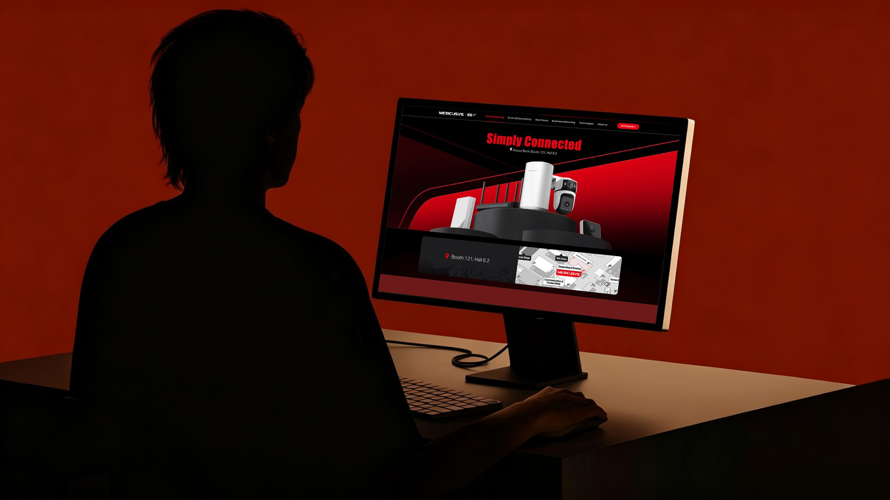
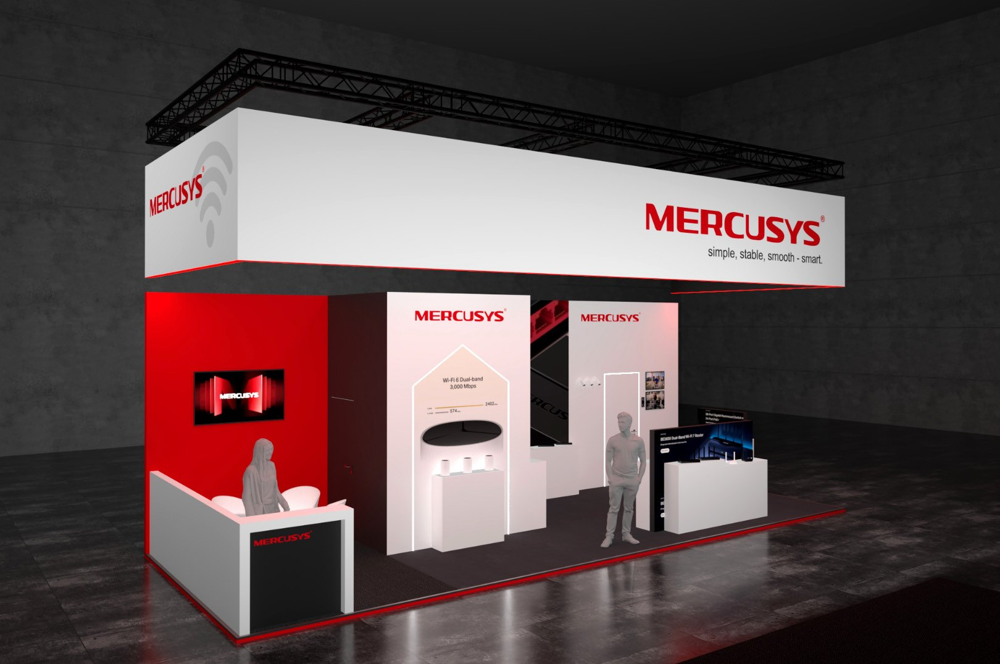
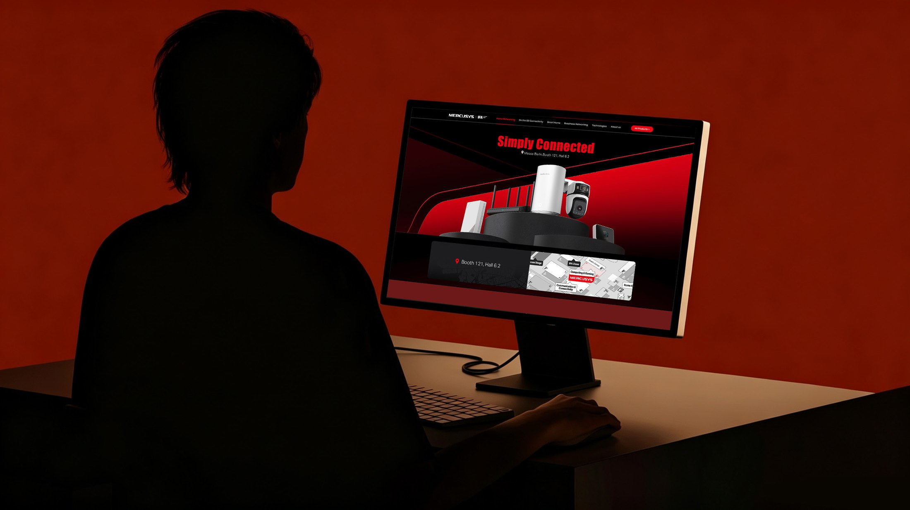
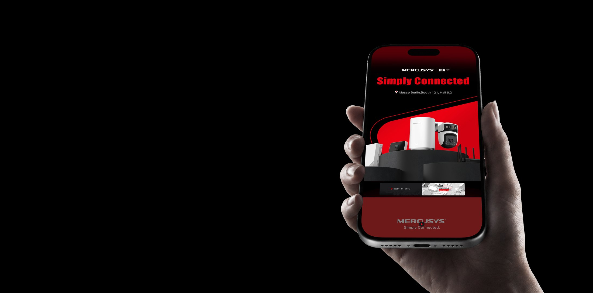
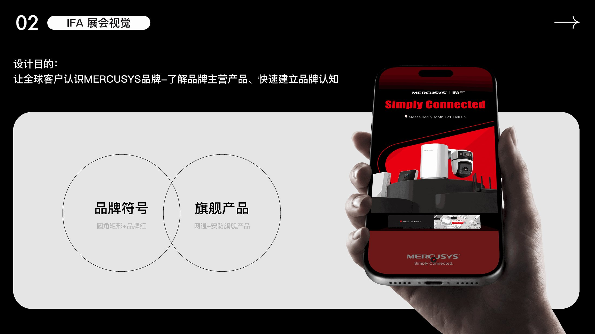

← Work — 08 / 15 · Marketing DesignMERCUSYS IFA
One booth, two flyers, one brand symbol — so a global trade-show audience recognises MERCUSYS and its two flagship lines within the seconds a walk-through allows. 一个展台、两张单页、一套品牌符号 —— 让全球客户在走过展台的几秒内记住 MERCUSYS 与它的两条旗舰产品线。


Background
设计背景
IFA is where MERCUSYS meets the whole world at once. The purpose was single-minded: let international customers recognise the brand, understand what it actually sells, and form that impression in the few seconds a trade-show walk-through allows.
That came down to two decisions. Give the brand one symbol — a rounded rectangle in MERCUSYS red — and let the symbol carry recognition. Then put the flagship lines, networking and smart security, in front of it, so the booth and the flyer state the same two things in the same order.
IFA 是全球客户一次性认识 MERCUSYS 的场合。设计目的很单一：让全球客户认识 MERCUSYS 品牌、了解品牌主营产品，在展会走动的几秒内快速建立品牌认知。
这落成两个决定：先给品牌一个符号 —— 圆角矩形 + 品牌红，让符号承担识别；再把旗舰产品（网通 + 安防）放在它面前，让展台与单页说的是同两件事、同一个顺序。
Approach
设计思路
Exhibition Visual & Booth Design — the decisions that set the direction. IFA 展会视觉与展台设计 —— 决定方向的几个选择。
-
01
Let one symbol do the recognising让符号承担识别
A rounded rectangle in MERCUSYS red is the smallest unit that still reads from across a hall. It is repeated at booth scale, on the flyer cover and on the product cards, so the brand registers before any copy becomes legible.
圆角矩形 + 品牌红，是隔着展厅也能读到的最小单位。它在展台主结构、单页封面与产品卡上重复出现，让品牌在任何文案被看清之前先被认出来。
-
02
Flagships first旗舰产品优先
Networking and smart security are the two lines the booth is built around; everything else is arranged behind them, so a visitor leaves with two product memories instead of twelve.
网通与安防是展台围绕的两条旗舰线，其余产品排在它们之后 —— 让参观者带走两个产品记忆，而不是十二个。
-
03
One language across booth and print展台与单页共用一套语言
Booth structure, screen content and the two flyers (Smart Security / Networking) share the same grid, type scale and red — close enough that a flyer reads as a piece of the booth you can carry away.
展台结构、屏幕内容与两张单页（Smart Security / Networking）共用同一套栅格、字号层级与品牌红 —— 单页读起来就像展台上可以带走的一块。
Outcome
成果展示




- Brief
- Let global customers recognise MERCUSYS and its main product lines — fast让全球客户认识 MERCUSYS 品牌、了解主营产品，快速建立品牌认知
- Brand symbol
- Rounded rectangle + MERCUSYS red品牌符号：圆角矩形 + 品牌红
- Flagships
- Networking and smart security旗舰产品：网通 + 安防
- Deliverables
- Booth design · flyer design — art direction展台设计 · 宣传单页设计（美术指导）
Next project / 下一个作品
Xiao Zhan